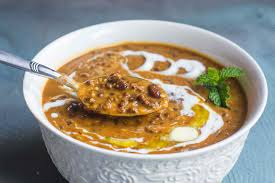

Dal Makhani

Dal Makhani: a rich and creamy lentil dish that has become a staple of North Indian cuisine. This dish, often gracing the menus of Indian restaurants worldwide, is a delightful blend of black lentils (urad dal), kidney beans (rajma), aromatic spices, butter, and cream. It's the perfect hearty and flavorful accompaniment to rice or Indian breads like naan and roti. The slow cooking process allows the lentils to absorb the complex flavors, creating a truly unforgettable culinary experience. Try making this classic dish at home and savor its comforting taste!
Ingredients
- Whole Black Lentils (Urad Dal)
- Kidney Beans (Rajma)
- Onion
- Tomato Puree
- Ginger-Garlic Paste
- Butter
- Cream
- Cumin Seeds
- Red Chili Powder
- Coriander Powder
- Turmeric Powder
- Garam Masala
- Kasuri Methi
- Water
- Salt
Steps to make Dal Makhani
- Soak and Pressure Cook Lentils: Soak black lentils and kidney beans overnight. Then, pressure cook them until tender.
- Prepare the Gravy Base: In a pan, sauté onions, ginger-garlic paste, and spices until aromatic.
- Add Tomato Puree: Incorporate tomato puree and cook until the oil separates from the mixture.
- Combine and Simmer: Add the cooked lentils to the gravy, along with water to adjust the consistency. Simmer for a while, allowing the flavors to meld.
- Enrich with Butter and Cream: Finish the dish by stirring in butter and cream for that signature richness.
- Garnish and Serve: Garnish with fresh coriander leaves and serve hot with naan, roti, or rice.
Home